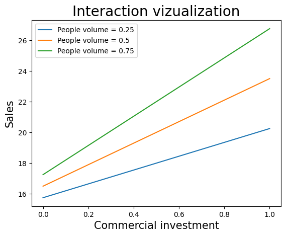
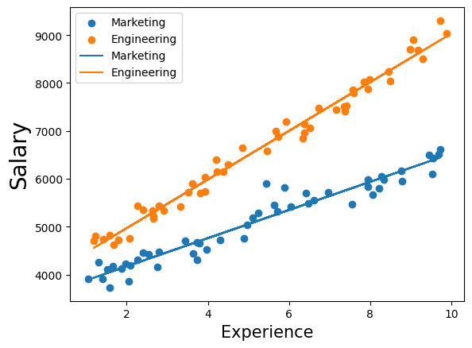
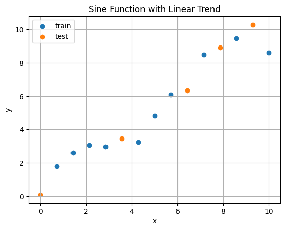
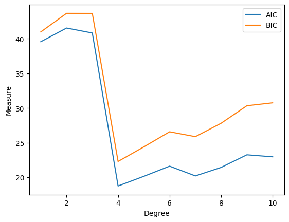

זוכר את סוף יחידה 5? משתני הדמה נתנו לנו מישורים מקבילים — הפער בין הערים היה קבוע, לא משנה כמה הדרכה או השקעה. ואמרנו שזה חיסרון של המודל. היחידה הזאת מתקנת בדיוק את זה.
נלמד שני שדרוגים למודל הלינארי, ושניהם עובדים על אותו טריק: מוסיפים עמודה חדשה שמחושבת מהקיימות — מכפלה של שני משתנים (אינטראקציה) או חזקה של משתנה (פולינום). המודל נשאר לינארי בפרמטרים, כל הכלים שלנו ממשיכים לעבוד — אבל פתאום הוא יודע לתאר עולם עשיר בהרבה. ובסוף נשלם את המחיר: יותר משתנים = סכנת Overfitting, ונצטרך שופטים חדשים (AIC, BIC, R² מתוקנן) כדי לבחור מודל.
6.1 מה זו אינטראקציה?
סיפור מהשיעור: מכירות של חנות תלויות בהשקעה בפרסום (\(X_1\)) ובכמות האנשים באזור (\(X_2\)). אבל רגע — פרסום לא שווה כלום אם אין אנשים שיראו אותו. כלומר: ההשפעה של \(X_1\) על המכירות תלויה בערך של \(X_2\). לזה קוראים אינטראקציה, וכך מכניסים אותה למודל:
📐 מודל עם אינטראקציה
$$Y=\beta_0+\beta_1X_1+\beta_2X_2+\beta_3\,X_1X_2$$
פענוח: האיבר החדש \(X_1X_2\) הוא פשוט מכפלת שני המשתנים — בפועל: עמודה חדשה בדאטה שכל ערך בה הוא המכפלה של שני הערכים המקוריים. \(\beta_3\) הוא מקדם האינטראקציה: כמה ההשפעה של אחד תלויה בשני. שים לב — המודל עדיין לינארי בפרמטרים (ה-β-ים), אז OLS וכל הפלט הרגיל עובדים בדיוק אותו דבר.

מהשיעור: מכירות מול השקעה בפרסום, קו לכל רמת "כמות אנשים" (0.25 / 0.5 / 0.75). הקווים לא מקבילים — נפתחים כמו מניפה: ככל שיש יותר אנשים, השיפוע של הפרסום תלול יותר. זה החתם הוויזואלי של אינטראקציה. (בלי איבר האינטראקציה — שלושת הקווים היו מקבילים, כמו ביחידה 5.)
💡 המבחן הוויזואלי — כלל שווה זהב
מציירים את Y מול \(X_1\) עבור כמה רמות של \(X_2\): קווים מקבילים = אין אינטראקציה. מניפה (שיפועים שונים) = יש אינטראקציה. את הכלל הזה תפגוש שוב מילה במילה ביחידה 10 (גרף האינטראקציה של ANOVA דו-כיווני) — שווה לחרוט.
⚠️ אינטראקציה ≠ קורלציה בין המשתנים 📓 תוכן מקובץ סיכום
שאלה שנשאלה בכיתה. אינטראקציה לא בודקת אם \(X_1\) ו-\(X_2\) קשורים זה לזה, והיא לא דורשת קורלציה ביניהם — היא בודקת רק איך הם משפיעים ביחד על Y. (ומה עם המולטיקוליניאריות של עמודת המכפלה עם המקוריות? יש קורלציה, אבל לא מושלמת — המודל ניתן לאמידה. ליתר ביטחון נהוג למרכז את המשתנים לפני המכפלה.)
בדוק את עצמך
בגרף של ציון מבחן מול שעות למידה, ציירו קו נפרד לכל רמת "איכות שינה". שלושת הקווים יצאו מקבילים לחלוטין. מה המסקנה?
💬 מקבילים = אותו שיפוע לכולם = ההשפעה של X₁ לא תלויה ב-X₂ = אין אינטראקציה. שים לב: שינה עדיין יכולה להשפיע על הציון (הקווים בגבהים שונים — אפקט ראשי!) — פשוט בלי לשנות את ערך השעה הנלמדת. אפקט ראשי ואינטראקציה הם שני דברים נפרדים.
6.2 איך מפרשים את המקדמים? הכלל שמשנה הכל
ברגע שיש אינטראקציה, אין יותר "השיפוע של \(X_1\)" — יש שיפוע שתלוי בערך של \(X_2\). רואים את זה בגזירה:
📐 ההשפעה השולית — דרך נגזרת חלקית
$$\frac{\partial y}{\partial x_1}=\beta_1+\beta_3x_2 \qquad\qquad \frac{\partial y}{\partial x_2}=\beta_2+\beta_3x_1$$
פענוח: "בכמה משתנה Y כשמזיזים את \(x_1\) ביחידה" = \(\beta_1+\beta_3x_2\) — ביטוי שמכיל את \(x_2\)! כלומר השיפוע של \(x_1\) זז עם \(x_2\), ולהפך. ו-\(\beta_3\) הוא קצב השינוי של השיפוע.
⚠️ העיקרון ששווה הכי הרבה נקודות 📓 תוכן מקובץ סיכום
(מודגש בסיכום:) במודל עם אינטראקציה, מקדם ראשי תקף רק כשהמשתנה שהוא באינטראקציה איתו שווה אפס. \(\beta_1\) הוא השיפוע של \(x_1\) רק כאשר \(x_2=0\); \(\beta_2\) הוא האפקט של \(x_2\) רק כאשר \(x_1=0\). מי שמפרש את \(\beta_1\) כ"השיפוע של \(x_1\) תמיד" — טועה בדיוק במקום שהמבחן בודק.
ומה אומר הסימן של \(\beta_3\)?📓 תוכן מקובץ סיכום
\(\beta_3\)
המשמעות
= 0
ההשפעות נפרדות וחיבוריות — עולם בלי אינטראקציה (קווים מקבילים)
> 0
המשתנים מחזקים זה את זה — הגדלת האחד מגדילה את השפעת השני
< 0
המשתנים מחלישים זה את זה — הגדלת האחד שוחקת את השפעת השני
בדוק את עצמך — הדוגמה המספרית מהשיעור📓 תוכן מקובץ סיכום
נתון המודל \(y=2+1\cdot x_1+0.5\cdot x_2+0.3\cdot x_1x_2\). מהו השיפוע של \(x_1\) כאשר \(x_2=2\)?
💬 הנגזרת החלקית: \(\partial y/\partial x_1=\beta_1+\beta_3x_2=1+0.3\cdot 2=1.6\). המקדם 1 לבדו הוא השיפוע רק בעולם שבו \(x_2=0\). כאן \(\beta_3>0\) — המשתנים מחזקים זה את זה: ככל ש-\(x_2\) גדול, כל יחידה של \(x_1\) שווה יותר.
6.3 אינטראקציה עם משתנה דמה — שיפוע לכל קבוצה
המקרה הכי חשוב למבחן: \(x_2\) הוא דמה (0/1). דוגמת השיעור: שכר לפי שנות ניסיון (\(x_1\), רציף) ומחלקה (\(x_2\): הנדסה=0, שיווק=1). הפלט:
coef
t
P>|t|
const
3953.42
63.0
0.000
experience
507.81
47.7
0.000
department_Marketing
-369.30
-4.2
0.000
experience × department_Marketing
-213.87
-14.4
0.000
בוא נפרק את זה לשני קווים — קו לכל מחלקה:
📐 מציבים את הדמה ומקבלים שני עולמות
$$x_2=0\;(הנדסה):\quad y=3953+507.8\,x_1 \qquad \text{שיפוע } 507.8$$
$$x_2=1\;(שיווק):\quad y=(3953-369.3)+(507.8-213.9)\,x_1 \qquad \text{שיפוע } 293.9$$
פענוח: הדמה מזיז את החותך (כמו ביחידה 5), אבל האינטראקציה משנה את השיפוע: מהנדס מרוויח כ-508$ על כל שנת ניסיון, איש שיווק רק כ-294$. ומקדם האינטראקציה −213.87 הוא בדיוק ההפרש בין השיפועים — בכמה שיפוע השיווק נמוך משיפוע ההנדסה. זהו. זה כל הסוד של שאלה 9.

מהשיעור: שכר מול ניסיון — קו הנדסה (כתום, תלול) מול קו שיווק (כחול, מתון). שים לב שהפער בין הקווים גדל עם הניסיון: ב-0 שנות ניסיון הפער הוא \(\beta_2=-369\), ובכל שנה הוא גדל ב-\(\beta_3\) — כבר לא "פער קבוע" כמו ביחידה 5!
🎛️ מגרש משחקים: מקדם האינטראקציה מסובב את הקו
התרחיש של שאלה 9 במבחן: אורך חיים מול משקל, לשתי קבוצות עישון. הזז את סליידר מקדם האינטראקציה β₃ וראה: ב-0 הקווים מקבילים; ככל שהוא זז — השיפוע של הלא-מעשנים "נפתח" ביחס לבסיס. לחץ על הכפתור כדי לעמוד בדיוק על ערכי המבחן.
🎯 שאלה 9 מהמבחן לדוגמא
חוזים אורך חיים לפי משקל ורמת עישון (לא מעשנים / מעשנים קלים / מעשנים כבדים = קבוצת הבסיס). מהפלט: weight = −0.4507; smoke_non_smokers = 8.7326; weight:smoke_non_smokers = 0.3187 (ועוד שורות). השאלה: מה משמעות המספר 0.3187?
🎯 שאלה 9 מהמבחן לדוגמא
מה משמעות המספר 0.3187 בשורת weight:smoke_non_smokers?
💬 מקדם אינטראקציה עם דמה = הפרש שיפועים מול קבוצת הבסיס. שלוש מלכודות במסיחים: "פי כמה" (זה הפרש, לא יחס!), "כלל האוכלוסייה" (ההשוואה היא תמיד מול הבסיס — מעשנים כבדים), ו"מעשנים קלים" (קבוצה אחרת לגמרי). בדיוק כמו −213.87 בדוגמת השכר — רק שכאן ההפרש חיובי: אצל לא-מעשנים המשקל מזיק פחות.
המשך — בדוק שאתה שולט
באותו פלט: מה השיפוע של המשקל עבור לא מעשנים?
💬 שיפוע קבוצה = שיפוע הבסיס + מקדם האינטראקציה שלה: −0.4507+0.3187=−0.132. כלומר: כל ק"ג עדיין מקצר חיים אצל לא-מעשנים, אבל הרבה פחות מאשר אצל מעשנים כבדים (−0.451). ו-8.7326? זה הזזת החותך — אפקט הדמה עצמו, לא השיפוע.
6.4 רגרסיה פולינומית — עקומות בעולם לינארי
השדרוג השני: מה אם הקשר בין X ל-Y מתעקל? ביחידה 4 פתרנו עם טרנספורמציה על Y. עכשיו דרך שנייה — מוסיפים חזקות של X כעמודות:
📐 המודל הפולינומי
$$f(x)=\beta_0+\beta_1x+\beta_2x^2+\beta_3x^3+\dots$$
פענוח: כל חזקה היא עוד עמודה בדאטה (\(x^2\) היא עמודת "x בריבוע" וכו'). המודל שוב לינארי בפרמטרים — אותו OLS, אותו פלט — אבל העקומה שהוא מצייר יכולה להתפתל כרצונה. בפייתון: PolynomialFeatures.
🔎 שאלה מהכיתה: מה ההבדל בין טרנספורמציה על Y לבין פולינום על X? 📓 תוכן מקובץ סיכום
תשובת המרצה: הבדל מהותי. טרנספורמציה על Y היא שינוי סקלה — עובדים בעולם החדש וממירים חזרה בסוף (וכזכור מיחידה 4, היא גם משנה את הנחות השאריות). פולינום על X, לעומת זאת, מוסיף משתנים למודל — וכל משתנה נוסף מגיע עם מחיר: סיכון ל-Overfitting. וזה בדיוק הנושא הבא.

נתוני השיעור: סינוס + מגמה לינארית + רעש. 15 נקודות שחולקו ל-10 Train (כחול — המודל לומד מהן) ו-5 Test (כתום — המודל לא רואה אותן באימון). קו ישר ברור שלא יספיק כאן — צריך פולינום. אבל מאיזו דרגה?
🎛️ מגרש משחקים: Overfitting בשידור חי
אלה בדיוק נתוני השיעור וההתאמות המדויקות שלו (חושבו מראש ב-numpy). גרור את דרגת הפולינום מ-1 עד 10 ועקוב אחרי שני ה-MSE: על ה-Train (מה שהמודל ראה) ועל ה-Test (מה שלא). שים לב מה קורה בדרגה 4... ומה קורה בדרגה 9.
💡 מה זה Overfitting באמת — שינון מול הבנה
מודל מורכב מדי משנן את נקודות האימון: העקומה עוברת בול דרך כולן (עובדה מתמטית: דרך \(n\) נקודות תמיד עובר פולינום מדרגה \(n-1\) — עם 10 נקודות train, דרגה 9 נותנת R²=1 מושלם). אבל בין הנקודות הוא משתולל, ועל נתונים חדשים הוא נכשל בענק (MSE של 99.8!). כמו סטודנט ששינן את פתרונות התרגילים בעל-פה — מושלם על מה שראה, אבוד על שאלה חדשה. 📓 תוכן מקובץ סיכום ומהחידוד בכיתה: ה-MSE על ה-train תמיד יורד (או נשאר) כשמעלים דרגה — כי המודל הגדול תמיד יכול "לוותר" על האיבר הנוסף ולשחזר את הקטן. על ה-test אין שום הבטחה כזאת — והפער בין השניים הוא בדיוק ההגדרה של Overfitting.
6.5 אז איך בוחרים מודל? R² מתוקנן, AIC ו-BIC
למה לא פשוט לבחור לפי R²? כי R² רגיל אף פעם לא יורד כשמוסיפים משתנים — בדרגה 10 הוא מגיע ל-0.993 והכי "טוב", בדיוק במודל הכי מנופח. R² הוא שופט מושחת בתחרות הזאת. יש שתי גישות הוגנות:
גישה 1 — Train/Test: מה שראית בווידג'ט: מפצלים (בדרך כלל 80/20 או 70/30), מאמנים על החלק הראשון ושופטים לפי ה-MSE על השני. בנתוני השיעור: דרגה 4 מנצחת (MSE=0.281). החיסרון: "בזבזנו" נתונים על ה-test.
גישה 2 — מדדים שקונסים מורכבות📓 תוכן מקובץ סיכום (שאלה מהכיתה: "איך לא לוותר על דאטה?") — מאמנים על הכל, ומשלמים קנס על כל פרמטר:
📐 שלושת השופטים
$$AIC=n\ln\!\Big(\frac{RSS}{n}\Big)+2k \qquad BIC=n\ln\!\Big(\frac{RSS}{n}\Big)+k\ln(n) \qquad R^2_{adj}=1-\frac{(1-R^2)(n-1)}{n-k-1}$$
פענוח: \(RSS\) — סכום ריבועי השאריות (כמה המודל מפספס); \(n\) — מספר תצפיות. שים לב ל-\(k\) — הוא מוגדר שונה בין הנוסחאות: ב-AIC וב-BIC \(k\) = מספר הפרמטרים כולל החותך, ואילו בנוסחת \(R^2_{adj}\) \(k\) = מספר המשתנים המסבירים בלי החותך. ב-AIC/BIC: האיבר הראשון יורד כשההתאמה משתפרת ("הנחה"), והשני עולה עם כל פרמטר ("קנס") — המודל הכי "זול" מנצח (מינימום). ההבדל היחיד ביניהם: גובה הקנס — \(k\ln(n)\) של BIC גדול מ-\(2k\) של AIC (כבר מ-8 תצפיות), ולכן BIC בוחר מודלים חסכוניים יותר. ו-\(R^2_{adj}\): R² עם עונש — יורד אם המשתנה החדש לא תורם מספיק (מקסימום מנצח).

מהשיעור: AIC ו-BIC לכל דרגה (מחושבים על כל 15 הנקודות, בלי פיצול). שניהם צונחים למינימום חד בדרגה 4 — בדיוק הדרגה שה-Test בחר! שלושת המדדים (גם R²adj, שמגיע לשיא 0.9845 בדרגה 4) מסכימים פה אחד.
💡 שני דגשים של המרצה על המדדים 📓 תוכן מקובץ סיכום
1) לערך של AIC או BIC אין משמעות בפני עצמו — הם רק להשוואה בין מודלים על אותם נתונים (18.75 זה "טוב"? אין תשובה. קטן מהמתחרים? מנצח). לעומתם R²adj כן ניתן לקריאה אבסולוטית (0.98 מעולה, 0.3 חלש). 2) אין הכרעה חד-משמעית באיזה מדד להשתמש — לרוב שלושתם מגיעים לאותה מסקנה.
⚠️ שתי עובדות על R²adj שהמבחן אוהב
1) בניגוד ל-R², הוא יכול לרדת כשמוסיפים משתנה גרוע — זו כל הפואנטה שלו. (אבל הוא לא "תמיד יורד" — משתנה טוב מעלה אותו!) 2) בניגוד ל-R², הוא יכול להיות שלילי — וללא גבול תחתון בכלל: −3, −98, כמה שרוצים (חסום רק מלמעלה: \(R^2_{adj}\le R^2\le 1\)). ראה בעצמך בווידג'ט:
🎛️ מגרש משחקים: מתי R²adj משתגע?
שלוט בשלושת הרכיבים של הנוסחה — R², מספר תצפיות n ומספר משתנים k. העקומה מציירת את R²adj לכל ערך של k (בהנחת אותו R² — במציאות R² עולה קצת עם k, אבל כאן רואים את אפקט הקנס הטהור). שים לב לצניחה לאינסוף-מינוס ליד הקו האדום — ולמה שקורה בדיוק עליו.
🎯 שאלה 12 מהמבחן לדוגמא
מה ההבדל בין R² ו-R²adj?
💬 ב' ודאי נכונה — הקנס על פרמטרים הוא כל הרעיון. ג' שגויה — אף אחד מהם לא "ממזער" שום דבר, שניהם מדדי טיב על אותו מודל OLS. ולגבי א' — דיוק חשוב: הניסוח "בין −1 ל-1" לא נכון מתמטית! R²adj חסום מלמעלה ב-1 אבל לא חסום מלמטה — נסה בווידג'ט למעלה: R²=0.1, n=20, k=15 נותן −3.28, הרחק מתחת ל-−1. הכוונה של כותב השאלה הייתה כנראה "R²adj יכול להיות שלילי, בניגוד ל-R²" — ובקריאה הזאת א' "נכונה" והתשובה המיועדת היא ד. במבחן עצמו כנראה זו התשובה שמצופה — אבל עכשיו אתה יודע את האמת המלאה, ואם השאלה תופיע כך שווה אפילו לוודא מול המרצה.
בדוק את עצמך
חוקרת מדווחת: "המודל שלי השיג AIC של 18.75!" מה אפשר להסיק?
💬 דגש מרצה מהשיעור: AIC/BIC משמעותיים רק בהשוואה — "הכי נמוך מבין המועמדים" מנצח, אבל למספר עצמו אין סרגל אבסולוטי (הוא אפילו יכול להיות שלילי). זה בדיוק ההבדל מ-R²adj, שכן נקרא לבד.
🔎 בונוס: כשהמדדים מגלים את האמת (דוגמת הכנסות החנות)
בשיעור בנו דאטה של הכנסות חנות מ-3 משתנים (תנועת רגל, פרסום, מתחרים), כשהאמת המוגרלת עצמה כללה איברים ריבועיים ואינטראקציה — כלומר "האמת" היא פולינום מדרגה 2. הריצו מודלים מדרגה 1 עד 10 (שים לב להתפוצצות: בדרגה 10 עם 3 משתנים יש כבר 286 עמודות!) — ו-BIC בחר בדיוק דרגה 2. המדדים לא סתם "מענישים מורכבות" — הם מזהים את המבנה האמיתי של הנתונים.
6.6 סיכום היחידה + מה חשוב לבחינה
מושג
שורה תחתונה
אינטראקציה
עמודת מכפלה \(X_1X_2\); מניפה בגרף = יש, מקבילים = אין
פירוש עם אינטראקציה
שיפוע \(x_1\) = \(\beta_1+\beta_3x_2\); מקדם ראשי תקף רק כשהשני = 0
אינטראקציה עם דמה
שיפוע לכל קבוצה; מקדם האינטראקציה = הפרש השיפועים מהבסיס
פולינום
חזקות של X כעמודות; עדיין לינארי בפרמטרים
Overfitting
שינון ה-train (MSE→0, R²=1) עם קריסה על ה-test
בחירת מודל
Test-MSE מינימלי, או AIC/BIC מינימלי / R²adj מקסימלי; לא לפי R²!
R²adj
קונס פרמטרים; יכול לרדת ויכול להיות שלילי; תמיד ≤ R²
🎯 מוקדי בחינה ביחידה הזאת
שאלה 9: מקדם אינטראקציה עם דמה = בכמה (לא פי כמה!) השיפוע של הקבוצה שונה משיפוע קבוצת הבסיס. שאלה 12: R²adj מתחשב במספר הפרמטרים ויכול להיות שלילי (בלי גבול תחתון — הניסוח "בין −1 ל-1" באופציה א לא מדויק) — התשובה המיועדת: ד (א+ב). אין בדף העזר: אף אחת מהנוסחאות של היחידה — אבל ההיגיון חשוב יותר מהשינון: קנס על מורכבות, הפרש שיפועים.
שאלון סיכום
מודל א' (3 פרמטרים): R²=0.85. מודל ב' (25 פרמטרים): R²=0.91. לפי מה נכריע ביניהם?
💬 R² רגיל תמיד עולה עם פרמטרים — 0.91 מול 0.85 לא אומר כלום בלי לשקלל את המחיר. המדדים המתקנים (או test set) עושים בדיוק את זה. וגם "פחות תמיד עדיף" שגוי — לפעמים המורכבות מוצדקת (כמו דרגה 4 אצלנו). האיזון הוא הכל.